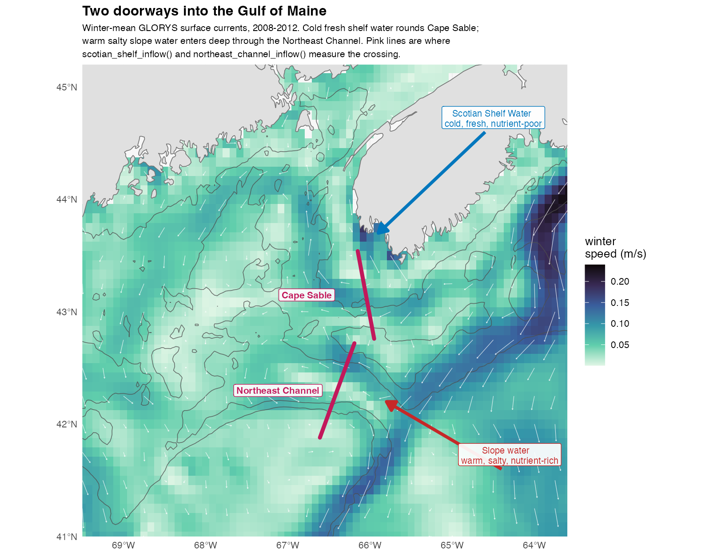

Every quantity derivoce derives, what it means, and why it is computed the way it is. The “Getting started” vignette walks a worked example; this is the reference behind it.
Nothing here runs when the vignette is built — the code is shown so it can be read and copied, and a real fetch needs a network and Copernicus credentials.
What it computes
Horizontal gradients
horizontal_gradient() gives the magnitude of a
covariate’s change with distance. That is what picks out fronts, the
convergence zones where plankton aggregate. It can return the eastward
and northward components too.
Results are in covariate units per kilometre, not per degree. That matters: a degree of longitude is about 83 km at 42°N but 111 km at the equator, so a per-degree gradient is stretched by latitude and not comparable across a study area. The longitude spacing is recomputed for every grid row.
This is a deliberate departure from the
raster::terrain() call the original pipeline used for
sst_grad and uv_grad (Ross et al. 2023).
terrain() returns a slope angle, which is
dimensionally meaningless for a field in °C. This returns a real rate of
change with a real unit.
Vertical gradients
vertical_gradient() is the difference between two
temperature columns in each cell, a stratification index. It is large
where a warm surface layer sits over cold deep water, and near zero
where the column is mixed. It defaults to surface-minus-bottom, and both
of those come from the same Copernicus dataset, so the usual case needs
no extra download.
The two columns are arguments rather than fixed, so any two levels
work: accessCopernicus() takes a depth and
returns one level per call, so a second fetch gives a temperature at
whatever depth you choose. Where you know the two depths,
buoyancy_frequency() is the better measure — a temperature
difference stands in for stratification only where salinity is uniform,
and Scotian Shelf inflow is fresh enough to stratify water barely warmer
at the surface.
Pass a depth column for a per-metre rate instead of a
total difference. datamatch::attach_bathymetry() supplies
that column:
bathy <- datamatch::fetch_bathymetry(bounding_box = bb)
env <- datamatch::attach_bathymetry(env, bathy, "DEPTH")
env <- vertical_gradient(env, depth = "DEPTH") # degrees C per metreTemporal gradients, lags, and integrals
-
temporal_gradient()gives the rate of change between consecutive steps, per step, per day, or per month. How fast conditions are shifting, as distinct from what they are. -
lag_covariate()gives the value n steps back. Populations respond with a delay: a bloom feeds the animals sampled a month later, not those sampled during it. Ross et al. (2023) used a one-month SST lag, which isby = "month"here. -
integrate_covariate()accumulates over preceding steps. A survey samples the food built up since the season began, not the food present at that instant. The defaultwindow = "year"reproduces theint_chlof Ross et al. (2023), chlorophyll integrated from January and reset each year. A numeric window rolls without resetting. -
rolling_covariate()summarises a trailing window rather than accumulating it: mean, standard deviation, minimum, maximum, sum, median or range. That is a different covariate from the integral, not a variation on it. Two places with identical three-month totals can differ entirely in whether the total arrived steadily or in one pulse, and for anything with a threshold response that difference is the signal. The window ends at, and includes, the current step, so a three-month mean at March covers January to March.
Locations are matched by coordinate, not row order, so time steps need not list their points in the same order.
Lag by calendar time, not by position
lag_covariate() counts steps by default, which is only
unambiguous when the series is evenly spaced and complete.
by counts calendar time instead:
lag_covariate(env, "CHL", n = 3, by = "month") # CHL_lag3month
lag_covariate(env, "SST", n = 1, by = "year") # same month, last year
lag_covariate(env, "SST", n = 30, by = "day") # daily productsPrefer a calendar unit whenever the lag means something biological.
“Three months ago” is a claim about the organism. “Three steps ago” is a
claim about how the data was fetched, and the two stop agreeing the
moment a month is missing. In a monthly series missing April,
by = "step" makes March the predecessor of May, so a
one-step lag is quietly a two-month one. by = "month"
returns NA there instead.
n may be a vector, which is what an autoregressive
design needs:
lag_covariate(env, "SST", n = 1:3, by = "year")
# adds SST_lag1year, SST_lag2year, SST_lag3yearWith by = "year" this holds the calendar month fixed and
varies only the year, so the seasonal cycle drops out and what remains
is interannual.
rolling_covariate() takes the same by,
computed on the same month counter, so a window and a lag of the same
size agree about what a month is. The two disagree only once the record
has a gap, and then silently: on a monthly series missing April, a
three-step window at June covers March, May and June, while a
three-month window covers April, May and June and finds only
two of them. min_obs decides whether a window that short is
summarised anyway or returned as NA.
Anomalies, extremes, and density
-
cell_anomaly()removes each cell’s own mean, so what is left is the departure rather than the geography. Eight degrees is cold for the southern Gulf of Maine and warm for the Scotian Shelf, and a model given raw temperature has to learn that before it can use the difference.standardize = TRUEdivides by the cell’s own variability too, which makes departures comparable across the domain at the cost of the magnitude.detrend = TRUEalso removes the long-term trend, which matters in a warming shelf sea: an anomaly that still contains the trend largely encodes which year it is. The cell-wise counterpart ofbox_anomaly(). -
decompose_covariate()splits a series into its parts — a trend, a repeating seasonal cycle, and the residual — additively, so each can be used or inspected on its own.slopegives the rate of change per year, one number per cell. The trend and the cycle are fitted together, because removed one after the other each absorbs part of the other. -
index_series()collapses a broadcast per-step column back to one row per time step. The region-scale indices below all compute one value per step and repeat it on every row so the object keeps its shape; this pulls the series back out for plotting or export. It refuses to collapse a column that varies across the grid, because that would keep one arbitrary cell and discard the map. -
marine_heatwave()flags periods unusually warm — or, withdirection = "cold", unusually cold — for the time of year, after Hobday et al. (2016, 2018), with intensity, duration, cumulative intensity and the four categories. Whether an animal was there in an ordinary summer or a heatwave summer is often more useful than the temperature itself. -
potential_density()gives sigma-theta from temperature and salinity, by the UNESCO (1983) equation of state. Density, not temperature, is what stratification and buoyancy depend on, and the two part company exactly where it matters here: Scotian Shelf inflow is cold and fresh, which pull density in opposite directions. -
buoyancy_frequency()gives N² between two depths — the real stratification measure, wherevertical_gradient()only approximates it with a temperature difference. Needs a secondaccessCopernicus()call at a deeperdepth, joined as columns. -
eady_growth_rate()says how fast baroclinic instability grows, from the vertical shear, the stratification and the Coriolis parameter. High where a sheared, weakly stratified flow can overturn — the shelf-break front and the edges of warm-core rings — so it complementsdetect_eddies(): that finds eddies which exist, this finds where conditions favour making them. (Eady is a person, not a spelling of “eddy”.)
Fronts, contours, and flow structure
-
distance_to_front()measures how far each point is from the nearest front, usually a better predictor than the local gradient. Fronts are found by thresholding the gradient, after Belkin and O’Reilly (2009). A station in a smooth patch has zero gradient whether the nearest front is 2 km or 200 km away, and those are very different places to be. -
distance_to_contour()anddistance_to_isobath()measure distance to where a covariate crosses a value. Plankton track the shelf break, and “20 km inshore of the 100 m isobath” locates that better than “depth = 85 m”. -
ftle()andfsle()compute Lyapunov exponents (Haller 2015; d’Ovidio et al. 2004). Backward (the default) finds attracting structures, where water converges and material accumulates. Forward finds repelling structures, the transport barriers. For depth-resolved versions, fetch velocities at a chosen depth: Copernicus GLORYS carriesuoandvoon 50 levels. -
front_frequency()asks how reliably a front sits in a place, rather than how far one was at a moment. Fronts move: a cell frontal in one step of twenty caught a passing filament, while one frontal in fifteen sits on a shelf-break or tidal mixing front, and only the second aggregates plankton reliably enough for a predator to learn it. -
flow_deformation()gives vorticity, divergence, the strain components, the Okubo-Weiss parameter and the Rossby number from the velocity gradients. Instantaneous and local, so it sits betweeneke(), which needs a series, and the Lyapunov exponents, which need trajectories: separating an eddy interior from the filaments around it costs one pass rather than an integration. -
detect_eddies()goes from a field to objects: it groups the connected cells where rotation beats strain into individual eddies and describes each one, so a cell carries not “how eddy-like is the flow here” but “you are inside an eddy, it turns this way, and it is this big”. Polarity is the part that earns its keep — cyclonic cores upwell and often concentrate plankton, anticyclonic ones downwell, and a covariate that only says “eddy” averages the two together and can easily find nothing. -
distance_to_eddy()completes thedistance_to_*family. A station 5 km outside a rotating core and one 300 km away are different places, and an inside/outside flag scores both zero.polaritynarrows it to cyclonic or anticyclonic. -
residence_time()releases a particle at every point in a box and measures how long it stays. Long residence means a retentive place where anything with a life stage measured in weeks can complete it. Read the censoring note in?residence_timebefore averaging the result. -
eke()computes eddy kinetic energy. You choose what the anomaly is measured against: the record mean, a monthly climatology, or a rolling window. That choice decides what counts as an eddy rather than mean flow. -
current_speed()gives speed from u and v, theuvof Ross et al. (2023). Theiruv_gradis the spatial derivative of that speed field, so it iscurrent_speed()thenhorizontal_gradient()on the result. Differentiatinguandvseparately and combining afterwards is a different quantity. -
distance_to_shore()gives kilometres to the nearest coast, from Natural Earth. Static, so it is computed once per location and shared across time steps. A broad proxy for several things at once: depth, terrestrial input, tidal mixing, and larval retention all covary with it. Useful as a covariate, poor as an explanation.
FTLE or FSLE?
They ask inverse questions. Finite-Time Lyapunov Exponents fix the integration time and measure how far parcels separate. Finite-Size Lyapunov Exponents fix a separation and measure how long it takes.
env <- ftle(env, integration_days = 14) # "how much separation in 14 days?"
env <- fsle(env, final_separation = 50) # "how long to separate by 50 km?"Prefer FSLE when the spatial scale is what matters, or when the domain spans very different flow speeds. One fixed integration time resolves fine structure where the flow is fast and coarse structure where it is slow, so ridge intensity ends up partly encoding current speed rather than frontal activity. FSLE asks the same question everywhere.
Prefer FTLE when the timescale is what matters and can be named: a retention time, a cohort’s accumulation window, time since a bloom. FSLE has nowhere to put that.
Two caveats outweigh the choice. Monthly fields have already averaged
away the eddies that make sharp structures, and plankton are not passive
surface tracers. docs/methods.md
covers both.
Regional indices
Most functions here give you a value for every grid cell. These four give you one number per month for a whole region, like a climate index. They answer “how much water came in this month”, not “what was it like here”.
Two currents feed the Gulf of Maine, and they carry very different water:

Cold, fresh, nutrient-poor water rounds Cape Sable from the Scotian Shelf. Warm, salty, nutrient-rich water comes in deep through the Northeast Channel. The two take turns, so which one is dominant changes what the Gulf is like that season. That is why they are two indices and not one.
env <- scotian_shelf_inflow(env) # m^2/s, positive = into the Gulf
env <- northeast_channel_inflow(env)Three ways to measure the same inflow
You can ask three different questions about Scotian Shelf water arriving, and the literature asks all three. They are not interchangeable:
| Question | Function | Needs | Follows |
|---|---|---|---|
| How much water crossed this line? | scotian_shelf_inflow() |
UO, VO
|
Feng et al. 2016; Wang et al. 2022 |
| How much of the water here came from there? | water_mass_fraction() |
SST, SSS
|
Townsend et al. 2015 |
| Did the water here get fresher? | eastern_gom_salinity() |
SSS |
Grodsky et al. 2025 |
The first measures the flow itself, and is the only one that gives you a direction. The second measures what is present rather than what moved, which is what matters for nutrients, and it works on data with no currents in it. The third is the simplest and the least specific: it tells you conditions changed, not that water moved. Freshening could equally be rain or runoff.
Use more than one and disagreement is informative. Strong inflow with no freshening means the water that arrived was not unusually fresh, which tells you something about the Scotian Shelf that year.
env <- water_mass_fraction(env, endmembers = list(
LSW = c(temperature = 6, salinity = 34.4),
WSW = c(temperature = 12, salinity = 35.4)
), residual = TRUE)
env <- eastern_gom_salinity(env)derived_indices() lists all of them with their sources.
derived_indices(markdown = TRUE) gives you a table to paste
elsewhere.
Using your own line or box
The named indices have fixed geometry, because an index named after a place is defined by that place. For anywhere else, use the general versions:
env <- section_transport(env, from = c(-66.5, 43.3), to = c(-65.6, 42.6))
env <- box_anomaly(env, "SSS", box = list(xmin = -68, xmax = -66,
ymin = 43, ymax = 44.5))Before you use these
They flip sign in summer. Positive through winter, negative from June to September, at both sections. That is the real surface circulation, not a bug. Treat them as winter indices.
The numbers are not comparable to published transports. These integrate one surface layer along a line. A mooring array integrates the full depth of the section, so the figures differ by orders of magnitude. Read these as “more or less than usual”, not as a flux.
The Northeast Channel changed after 2000. Gulf Stream warm-core rings drive slope water in, and ring formation nearly doubled around then (Silver et al. 2023). A record spanning 2000 covers two different regimes, so check any long-term relationship on each side separately.
Check the residual on
water_mass_fraction(). It always returns a
fraction, even for water that is not a mix of your two endmembers at
all. residual = TRUE is how you find out whether the answer
means anything.
We chose the section endpoints ourselves by testing them against real
currents; they are not from any paper. docs/methods.md
shows how, and docs/section-placement-diagnostics.R
re-runs the test on your own data.
A note on “Follows”
It means we implemented the idea, not that we reproduce the published
series. Each function computes from whatever data you give it, so the
numbers will differ from the paper’s. Cite the paper for the concept and
describe your own inputs. Sources are also available as
as.data.frame(derived_indices())$source, and all work cited
anywhere here is listed under References at
the end.
Describing the result for an archive
The other functions here add covariates. These describe them, which
is a different job and a harder one to do afterwards: a derived
covariate’s meaning lives in how it was computed rather than in what was
measured. SST_grad is degrees per kilometre by central
differences on a lon/lat lattice with an NA outer ring, and
nothing in the column name or the numbers says so. By the time a dataset
reaches an archive, the person writing the metadata is often not the
person who ran the code.
eml_attributes() emits what this package knows as the
attribute table Ecological
Metadata Language expects, in the shape
EML::set_attributes() consumes, with
eml_col_classes() for the vector that goes alongside
it:
attributes <- eml_attributes(env)
EML::set_attributes(attributes, col_classes = eml_col_classes(env))derivoce does not depend on the EML package and writes
no XML. It hands over the table and stops there.
Units are where this earns its keep, and where it deliberately
refuses to help. A derived unit is built from its source — a gradient of
temperature is °C/km, a gradient of chlorophyll mg/m³/km — so the source
has to be known first. Everything datamatch serves already
is, including the seafloor terrain and the climate indices, so a
workflow built on those needs no units argument and
SST_grad comes back as celsiusPerKilometer
unprompted. Name anything else, or override a default:
eml_attributes(env, units = c(TEMP_INSITU = "celsius"))Anything still unresolved comes back as NA rather than a
guess. A dataset archived with confidently wrong units is worse than one
with a visible hole, because the hole gets filled and the wrong number
gets believed. Columns this package did not create are described as such
for the same reason.
EML also validates units against a fixed dictionary of 195 entries, and several quantities here are outside it — per second for vorticity and strain, per second squared for Okubo–Weiss and N², per day for the Lyapunov exponents and the Eady growth rate. A document using an undeclared unit does not validate, and it fails at submission rather than at authoring:
eml_custom_units(attributes) # only the non-standard units actually usedWarnings you may see
Mostly NA from FTLE or FSLE
This is the most common surprise, and it is not a failure. Both
follow parcels through the velocity field, and a parcel that reaches the
edge of the data has no velocity left to follow, so its cell returns
NA.
That costs a margin of roughly speed × integration time around the domain. At a shelf speed of 0.15 m/s the default 14 days is about 180 km, which removes a third of a 500 km box and all of a 1° one:
ftle(env, integration_days = 14)
#> Warning: ftle() returned no values at all: every point is NA.
#> A 14-day integration at this field's median speed (0.2 m/s) carries a
#> parcel about 250 km, and the domain is 82 by 110 km. 507 of 507 particles
#> left the velocity field before the window was up.
#> Shorten integration_days, or fetch a larger bounding box...So fetch a bounding box larger than your study area, by about that margin. Backward integration loses the upstream edge, forward the downstream one.
FSLE can also return nothing for a second reason: parcels that stay
in the domain but never separate by final_separation. Its
warning tells the two apart, because they need opposite fixes. Parcels
lost to the edge want a shorter max_days. Parcels that
never separated want a longer one.
The warning only fires when almost everything is NA.
Losing a margin is normal.
A derivative that cannot carry information
vars = NULL means every covariate column, and
datamatch now attaches columns that are not covariates to differentiate.
Asking for a derivative that cannot say anything gets a warning naming
the column:
lag_covariate(env, "DEPTH")
#> Warning: Static covariate(s) in a temporal operation: DEPTH.
#> These hold the same value at each location in every time step, so a lag
#> reproduces the column, a temporal gradient is zero, and an integral is a
#> running multiple of it...Two degeneracies, each checked only against the operation it actually breaks:
Temporal (lag_covariate(),
temporal_gradient(),
integrate_covariate()) |
Spatial (horizontal_gradient(),
distance_to_contour()) |
|
|---|---|---|
Static: DEPTH, SLOPE,
ASPECT, TPI
|
warns | fine, this is how you get slope |
Spatially uniform: NAO,
AO, AMO, PDO, LCR,
AMOC
|
fine, a lagged index is real | warns |
The test looks at the data, not at a list of known names, so a variable that happens to be constant in your extract is caught too.
Non-numeric columns are an error instead, since
nothing can be computed at all. fill_satellite_gaps() adds
a <var>_source factor. Naming it explicitly fails,
while vars = NULL skips it silently.
These warnings are a safety net, not a substitute for naming your variables once the object carries more than a plain access-function fetch.
Resampled and gap-filled input
datamatch can put two products on one grid
(upscale_grid(), downscale_grid()) or change
the time step (upscale_time(),
downscale_time()). Resampled output keeps the regular
lattice and the YEAR/MONTH/DAY
stamping, so everything here runs on it. Two directions change what a
derivative means:
- A spatial gradient of a downscaled variable measures the source grid. Rendering a 0.25° field at 4 km adds cells, not information, so the gradient is the step between the original coarse cells divided by the new smaller spacing. Derive on the native grid and upscale the result instead.
-
temporal_gradient()on time-interpolated data measures the interpolant.downscale_time(method = "linear")puts a constant slope between source steps, and that slope is what you get back.
Aggregating is the safe direction. Note that
min_coverage interacts with
integrate_covariate(): a partial period returned as
NA drops out of the running total rather than counting as a
low value.
For gap-filled satellite data, satellite and model chlorophyll differ
in mean and variance, so a gradient across a seam partly measures the
change of source. rescale = TRUE reduces the step, and
<var>_source says where the seams are. Leaving gaps
unfilled costs the other way: a central difference needs both
neighbours, so every cloud hole erases a ring around itself.